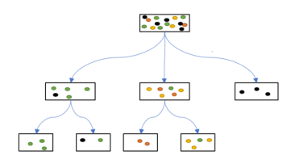

Stabla odlučivanja
Uvod
Algoritam stabla odlučivanja (engl. decision tree) ubraja se u jedan od najzastupljenijih pristupa klasifikacije. Zasniva se na induktivnom zaključivanju i uspešno se primenjuje u brojnim domenima, kako za klasifikacione, tako i za regresione zadatke.
Koncept ovog pristupa zasniva se na postavljanju niza pitanja ako/inače (engl. if/else), koja u krajnjem ishodu vode ka donošenju odluke, čime se imitira ljudski proces odlučivanja. Stabla odlučivanja razvrstavaju podatke u grupe (kategorije) tako što analiziraju njihove ključne osobine kroz niz jednostavnih pitanja. Podaci se postepeno dele na manje podskupove sa ujednačenijim karakteristikama, pri čemu se u svakoj fazi razdvajanje vrši na osnovu tačke grananja (postavljenog pitanja ili uslova).
Naziv stablo odlučivanja proistekao je iz njihove strukture, čiji prikaz podseća na oblik stabla. Stablo odlučivanja može se posmatrati kao složena hijerarhijska struktura koja se sastoji od više međusobno povezanih elemenata:
korenski čvor (engl. root node) je početni čvor stabla odlučivanja, sadrži ceo početni skup i izvršava prvu podelu podataka,
unutrašnji čvorovi (engl. internal nodes) predstavljaju testove grananja u odnosu na odredjenu karakteristiku, i nalaze se između korenskog čvora i listova,
listovi (engl. leaves) predstavljaju konačne klase ili predikcije, to su krajnji čvorovi u kojima se grananje stabla završava,
grane (engl. branches) predstavljaju moguće vrednosti izabrane karakteristike, pri čemu se primeri razvrstavaju u podskupove u skladu sa tim vrednostima,
atribut odluke (eng. decision attribute) je karakteristika koja se koristi da se postavi kriterijum podele u čvoru.
Korenski čvor predstavlja polaznu tačku stabla, jer sadrži ceo skup podataka i izvršava prvu podelu prema definisanom kriterijumu. Unutrašnji čvorovi predstavljaju tačke daljeg razdvajanja podataka prema vrednostima izabranih atributa. Grane povezuju čvorove i prikazuju ishode odluka, vodeći ka narednom čvoru sa sledećim testom ili ka listu, koji predstavlja krajnji ishod, tj. finalnu klasu ili predikciju.
Svaki primer prolazi putanju koja počinje u korenskom čvoru pa na osnovu vrednosti atributa, kreće se niz stablo sve dok ne dostigne list, koji određuje njegovu konačnu klasu. Na ovaj način korisniku se pruža pregledan i intuitivan uvid u logiku donošenja odluka, dok vizuelna prezentacija procesa odlučivanja omogućava lako sagledavanje svih mogućih scenarija i njihovih ishoda.
U zavisnosti od tipa ciljne promenljive, razlikuju se dve osnovne vrste stabala odlučivanja:
Klasifikaciona stabla, kod kojih je ciljna promenljiva kategorijska i uzima vrednosti iz konačnog skupa. Listovi predstavljaju odgovarajuće klase, dok grane odražavaju niz uslova nad atributima koji vode do određene klasne oznake.
Regresiona stabla, koja se primenjuju kada je ciljna promenljiva kontinuirane prirode. Njihov cilj je predviđanje numeričke vrednosti, koja se najčešće određuje kao prosečna vrednost posmatranja koja pripadaju tom listu.
Stabla odlučivanja se veoma često i uspešno primenjuju u operacionim istraživanjima, a njihova vizuelna reprezentacija je posebno svrsishodna jer značajno olakšava preglednost i razumevanje složenih scenarija donošenja odluka.
Snaga ovog modela leži u njegovoj intuitivnosti: on prevodi kompleksne podatke u preglednu strukturu pravila, omogućavajući nam da pratimo logički put od polaznih informacija do konačnog zaključka. Obrazloženje za svaku konkretnu odluku dobija se rekonstrukcijom putanje od pripadajućeg lista unazad do korena, pri čemu se u svakom čvoru jasno iščitava razlog parcijalnog izbora. Zahvaljujući ovoj strukturi, svakom stablu se jednoznačno može pripisati skup pravila tipa ’ako – onda’ (if – then).
Jednostavan primer
Na slici 1 ilustrativno je prikazana struktura stabla odlučivanja. Prilikom svakog grananja, podaci unutar novonastalih particija postaju sve homogeniji u odnosu na ciljnu promenljivu. Izbor korenog čvora, redosled odlučivanja u internim čvorovima, kao i granične vrednosti odluka imaju informativni karakter i ne odgovaraju stvarnom modelu.

Slika 22. Slika 1. Primer strukture stabla odlučivanja.
Svaki list stabla dodeljuje klasu koja je najzastupljenija među trening uzorcima koji su u njega dospeli, dok se novi uzorak, na osnovu vrednosti svojih karakteristika, vodi kroz grane stabla do lista koji predstavlja predikciju njegove klase.
Koncept stabla odlučivanja zasnovan je na vizuelnom prikazu logičkih pravila modela. Kroz hijerarhijsku strukturu, stablo vrši sukcesivnu dekompoziciju podataka, razvrstavajući ih u precizno definisane particije. Slika ilustruje kako se svakim korakom povećava unutrašnja sličnost podataka, čime se direktno olakšava precizno predviđanje ciljne promenljive.
Za isti skup podataka može se konstruisati veliki broj različitih stabala odlučivanja, pa je tokom treniranja potrebno pronaći najbolju strukturu stabla. U tom procesu algoritam u svakom čvoru bira onu karakteristiku koja omogućava najčistiju podelu podataka na podskupove. Podskup se smatra čistijim ukoliko u njemu dominiraju instance koje pripadaju istoj klasi. U tom cilju, tokom procesa treniranja stabla odlučivanja primenjuje se CART (Classification and Regression Trees) algoritam, .
Smanjenje nehomogenosti duž putanje od korena do lista ogleda se u postepenom razdvajanju podataka na sve homogenije podskupove. Ovaj proces, ilustrovan na slici 2, pokazuje kako se svakom narednom podelom povećava čistoća čvorova sve do formiranja listova.
{kind=link}

Slika 23. Slika 2. Primer strukture stabla odlučivanja.
Primer iz prakse: Primena stabla odlučivanja u upravljanju projektima
Predstavićemo primer koji ilustruje funkcionisanje sistema zasnovanog na pravilima. Zamislimo finansijsku instituciju koja svakodnevno donosi odluke o plasmanu kapitala i želi da automatizuje taj proces. Cilj je optimizacija odnosa prinosa i rizika u okviru budžetskih ograničenja, uz striktno poštovanje eksterne regulative i internih politika.
Kao mapa u procesu rasuđivanja, koristi se stablo odlučivanja, pri čemu proces odlučivanja započinje pitanjem korenom čvoru:
„Da li procena prinosa investicije ukazuje na vrednost iznad minimalno prihvatljivog praga?”
Ukoliko je odgovor potvrdan, postavlja se sledeće pitanje:
„Da li je procenjeni nivo rizika prihvatljiv?”
Ukoliko jeste, prelazi se na naredno pitanje:
„Da li se investicija može brzo i lako unovčiti?”Ukoliko jeste, investicija se odobri.
Ukoliko nije, investicija se odbija.
Ako očekivani prinos nije iznad minimalnog praga, analizira se alternativa:
„Da li je investicija važna za ostvarenje dugoročnih ciljeva portfelja?”
Ukoliko da, investicija se uslovno prihvata uz dodatne mere kontrole rizika.
Ukoliko ne, investicija se odbacuje.
Svaka grana stabla prikazuje jedan mogući scenario finansijskog odlučivanja, a listovi stabla sadrže konačne odluke: ‘odobri’, ‘odbija’ ili ‘uslovno prihvata uz dodatne mere kontrole rizika’. Na ovaj način, složen proces upravljanja investicijama razlaže se na jednostavne, logički povezane i pregledne korake.
Algoritmi stabala odlučivanja mogu se podeliti prema različitim strukturnim i funkcionalnim osobinama
Fleksibilno odlučivanje: Podrška za univarijatne i multivarijatne testove omogućava precizno modelovanje grananja.
Višestruki ishodi: Čvorovi se mogu deliti na dva ili više podstabala u zavisnosti od rezultata testa.
Podrška za mešovite tipove podataka: Robusnost pri radu sa mešovitim tipovima karakteristika (numeričke/kategoričke) bez teške pretobrade.
Univerzalna klasifikacija: Jednako efikasna primena na binarnim i višeklasnim problemima.
Izbor atributa u stablu odlučivanja
Iako je struktura stabla intuitivna, nameće se nekoliko pitanja kao ključni izazovi u izgradnji stabla:
Kako odrediti atribut na kojem će se izvršiti početno razdvajanje celokupnog skupa podataka?
Kako odrediti hijerarhiju internih čvorova, tj. kako se bira redosled atributa na svakom nivou kako bi razdvajanje bilo maksimalno efektivno?
Kako odrediti kriterijum razdvajanja na svakom koraku?
Izbor atributa (engl. attribute selection) je proces koji podrazumeva odbir korenskog čvora, redosleda internih čvorova i kriterijuma odlučivanja. Od odabra atributa za podelu skupa podataka zavisi kvalitet podele koji se meri koristeći nečistoću (engl. impurity) ciljne promenljive u novonastalim čvorovima.
Algoritmi teže ka tome da svakom podelom (granjanjem) podataka povećaju čistoću podataka, odnosno da dobijene grupe učine što homogenijim. Grananjem koje počinje od korena i nastavlja se kroz interne čvorove, podaci se razvrstavaju tako da u završnim ’listovima’ preovlađuju pripadnici iste klase. Upravo je ta čistoća grupa glavni putokaz algoritmu pri određivanju najboljih granica za donošenje odluka.
Visoka nečistoća znači da podela atributa nije uspela da ’pročisti’ podatke. Novi (potmoci) čvorovi i dalje imaju sličan odnos klasa kao i početni (roditeljski) čvor, pa se proces učenja ne smatra uspešnim.
Niska nečistoća znači da je čvor ’čistiji’ — u njemu preovlađuju pripadnici iste klase, što olakšava donošenje konačne odluke ili predviđanja.
Suština pronalaženja najboljeg razdvajanja leži u odabiru onog atributa koji će maksimalno ’pročistiti’ rezultujuće grupe (decu čvorove) u odnosu na početni skup podataka.
Neke od poznatih mera nečistoće su:
Entropija (engl. Entropy)
Informacioni dobitak (engl. Information Gain)
Gini indeks (engl. Gini Index)
Entropija se koristi za merenje stepena neizvesnosti ili neuređenosti u podacima. U kontekstu stabala odlučivanja, ona nam govori koliko su podaci unutar jednog čvora izmešani (heterogeni). Ona potiče iz teorije informacija i služi da se precizno izračuna koliko nam informacija pruža određena promenljiva. Neka je \(S\) skup podataka koji sadrži primere iz \(c\) različitih klasa. Entropija skupa \(S\), označena sa \(H(S)\), definiše se sledećim izrazom: $\(H(S) = - \sum_{i=1}^{c} p_i \log_2(p_i)\)\( gde \)p_i\( predstavlja verovatnoću pojave klase \)i\( u skupu \)S\(, odnosno udeo primera koji pripadaju toj klasi u ukupnom broju posmatranja. Uočimo da, ukoliko svi primeri u čvoru pripadaju istoj klasi, tj. ako za neko \)i\( važi \)p_i = 1$, entropija je jednaka 0, što ukazuje na potpunu homogenost podataka. Nasuprot tome, entropija dostiže maksimalnu vrednost kada su klase ravnomerno raspoređene. Pošto entropija predstavlja meru nehomogenosti posmatranog skupa podataka: manje vrednosti su poželjnije, vrednost 0 označava idealno potpuno homogeno stanje, tj. svi primeri u čvoru pripadaju istoj klasi, dok veće vrednosti entropije ukazuju na veću mešovitost i slabiju razdvojenost klasa. U kontekstu mašinskog učenja, entropija kvantifikuje stepen mešavine klasa unutar jednog čvora:
Niska entropija: Ukazuje na visok stepen homogenosti skupa, gde većina primera pripada istoj klasi (u idealnom slučaju, čvor je „čist”).
Visoka entropija: Ukazuje na heterogenost ili veliku raznolikost klasa, što znači da je skup podataka u tom čvoru mešovit i nepredvidiv.
Informacioni dobitak meri koliko dodatnih „informacija” o ciljnoj promenljivoj dobijamo poznavanje određe promenljive, tj. koliko nam poznavanje određene promenljive pomaže da smanjimo neizvesnost oko ciljne promenljive. Drugim rečima, on predstavlja smanjenje entropije koje se postiže nakon što se podaci podele na osnovu određenog atributa, [Dash i Liu, 1999]. Izračunava se kao razlika između entropije roditeljskog čvora i ponderisanog proseka entropija svih dece čvorova: $\(IG(S, A)=H(S) - H(S|A)= H(S) - \sum_{v \in Vrednosti(A)} \frac{|S_v|}{|S|} H(S_v),\)\( gde je \)H(S)\( entropija roditeljskog čvora, \)A\( atribut na osnovu kojeg se vrši podela, \)|S_v| / |S|\( udeo uzoraka koji odlaze u dete čvor \)v\( u odnosu na ukupan broj uzoraka. U svakom koraku, algoritam bira onaj atribut \)A\( koji **maksimizuje \)IG(S, A)$**, jer on pruža najviše informacija o ciljnoj promenljivoj. Informaciona dobit se definiše kao razlika između entropije roditeljskog čvora i ponderisanog zbira entropija njegovih grana. Ponderi su proporcionalni broju uzoraka u svakoj grani, što omogućava da doprinos svake grane bude u skladu sa veličinom podataka koje sadrži.
Gini indeks meri stepen heterogenosti podataka unutar čvorova i predstavlja verovatnoću da se nasumično izabran element iz skupa pogrešno klasifikuje. Ovo je jedan od najčešće korišćenih kriterijuma za identifikaciju optimalnih podela. Gini nečistoća skupa podataka \(S\) matematički se izražava sledećom formulom: $\(Gini(S) = 1 - \sum_{i=1}^{c} p_i^2,\)\( gde su elementi formule definisani na sledeći način: \)c\( predstavlja ukupan broj klasa u posmatranom skupu podataka (npr. kod binarne klasifikacije \)c = 2\(), \)p_i\( označava proporciju pojavljivanja primera koji pripadaju klasi \)i$ u odnosu na ukupan broj primera u čvoru. Vrednost Gini nečistoće direktno odražava stepen homogenosti čvora: što je ona niža, to je čvor homogeniji, što ukazuje na jasnu dominaciju jedne klase. Baš kao i kod entropije, minimalna vrednost 0 označava savršeno ’čist’ čvor, u kojem svi primeri pripadaju isključivo jednoj kategoriji.
Cilj algoritma je da kroz proces grananja kontinuirano smanjuje nečistoću čvorova. Rezultat ovog procesa je:
Veća homogenost: Svako novo razdvajanje uzoraka teži da bude „čistije” u odnosu na prethodno.
Formiranje strukture: Grananje u korenskom ili internim čvorovima stvara grane i podstabla koja vode ka listovima sa visokom zastupljenošću jedne klase.
Ključni princip: Najbolja podela je ona koja donosi najveći pad vrednosti funkcije nečistoće (poput entropije, informacionog dobitka ili Gini indeksa) u dobijenim novonastalim podskupovima.
Na osnovu vrednosti izračunatih pomoću nevednih mera, algoritmi za izgradnju stabala donose odluku o tome koji će atribut i koja konkretna vrednost biti iskorišćeni za narednu podelu podataka.
Ovaj proces karakterišu sledeće stavke:
Iterativna izgradnja: Stablo se formira sukcesivno, korak po korak.
Optimalno razdvajanje: Svaki novi čvor se postavlja sa ciljem da što efikasnije razgraniči klase unutar skupa podataka.
Preciznost modela: Kvalitet svake pojedinačne podele kumulativno doprinosi većoj preciznosti klasifikacije celokupnog modela.
CART algoritam (Classification and Regression Trees)
Postoji više algoritama za izgradnju stabala odlučivanja, među kojima je najrasprostranjeniji CART (engl. Classification and Regression Trees), prepoznatljiv po svojoj jednostavnosti i efikasnosti. Ovim algoritmom se gradi binarno stablo, koje se može primenjivati i na kategoričke i na neprekidne prediktore.
Ključne specifikacije CART algoritma:
Dualna primena:
CART se uspešno koristi za probleme klasifikacije (predviđanje diskretnih klasa) i regresije (predviđanje kontinuiranih vrednosti).Binarna struktura:
Za razliku od nekih drugih algoritama (npr. ID3), CART uvek generiše binarna stabla, pri čemu se svaki roditeljski čvor deli na tačno dva deteta.Univerzalnost podataka:
Algoritam direktno podržava rad sa numeričkim i kategorijskim nezavisnim promenljivama.
Kriterijumi grananja i optimizacija
Suština CART algoritma leži u pronalaženju optimalnog „reza“ koji najbolje razdvaja podatke. Izbor matematičke metrike zavisi isključivo od prirode ciljne promenljive:
Tip zadatka |
Kriterijum podele |
Cilj |
|---|---|---|
Klasifikacija |
Gini indeks |
Maksimizacija čistoće čvorova |
Regresija |
Smanjenje varijanse (MSE) |
Minimizacija kvadratne greške |
Mnogi moderni algoritmi koji kombinuju više modela u jedan (ansambli), poput slučajnih šuma (engl. Random Forest) i gradijentnog bustinga (engl. Gradient Boosting), zasnovani su upravo na arhitekturi i principima CART stabala.
Dinamika izgradnje stabla: Rekurzivno particionisanje
Proces obučavanja stabla odlučivanja zasniva se na algoritmu koji polazi od celovitog skupa podataka i pripadajućih klasnih oznaka. Izgradnja modela odvija se kroz nekoliko ključnih faza:
Hijerarhijski pristup odozgo nadole (engl. Top-down): Algoritam počinje od korenskog čvora koji sadrži sve instance za obuku, a zatim progresivno raščlanjuje podatke na sve manje podskupove.
Rekurzivna podela: Proces se ponavlja (rekurzivno) nad svakim novonastalim čvorom, sve dok se ne ispune uslovi za zaustavljanje ili dok podaci ne postanu potpuno homogeni.
Pohlepna strategija (engl. Greedy approach): Algoritmi stabala odlučivanja su po prirodi „pohlepni”. To znači da u svakom koraku, počevši od korena, biraju trenutno najbolju podelu podataka (lokalni optimum) bez mogućnosti naknadne revizije ili vraćanja na prethodne korake (no backtracking).
Koraci algoritma stabla odlučivanja
Kroz hijerarhijski sistem odlučivanja, algoritam stabla odlučivanja vrši stalnu segmentaciju podataka, težeći tome da svaki sledeći podnivo bude homogeniji od prethodnog.
Postupak formiranja stabla podrazumeva:
Izbor korenog čvora
U početnom koraku svi uzorci trening skupa smeštaju se u koreni čvor stabla.Izbor optimalnog atributa za podelu
Za svaki karakteristiku i sve moguće vrednosti praga izračunava se mera kvaliteta podele, a kao kriterijum bira se podela koja ostvaruje najveće smanjenje nečistoće skupa podataka.Podela skupa podataka na osnovu karakteristike
Skup podataka se deli na podskupove prema izabranoj karakteristici i odgovarajućem pragu, tako da se maksimizuje kvalitet podele, odnosno postiže najveće smanjenje nečistoće prema izabranom kriterijumu.Rekurzivna izgradnja stabla
Postupak grananja se ponavlja na svakom novom čvoru koristeći iste korake selekcije i podele. Ovaj krug se vrti za svaki deo podataka sve dok ne dođemo do nekog od unapred postavljenih ograničenja. Najčešća ograničenja (kriterijumi zaustavljanja) su:
Homogenost podataka
Svi uzorci u čvoru pripadaju istoj klasi (čvor postaje čist).Maksimalna dubina (engl. Maximum Depth)
Dostignut je unapred definisan maksimalni broj nivoa stabla.Minimalni broj uzoraka
za grananje (engl. Min Samples Split): Broj uzoraka u čvoru je manji od minimalnog broja potrebnog za dalju podelu.
u listu (engl. Min Samples Leaf): Podela bi rezultirala listom sa manjim brojem uzoraka od dozvoljenog minimuma.
Ograničenje broja listova (engl. Maximum Leaf Nodes)
Dostignut je maksimalni dozvoljeni broj krajnjih čvorova (listova).Nedovoljan informacioni dobitak
Dalja podela ne donosi značajno poboljšanje kvaliteta modela ili je informacioni dobitak ispod zadatog praga.
Formiranje listova
Nakon završetka obuke, svaki list predstavlja onu klasu kojoj pripada većina uzoraka u njemu. Kada klasifikujemo novi podatak, on prolazi kroz stablo prateći odgovarajuće grane dok ne stigne do lista koji određuje njegovu pripadnost određenoj klasi.Kod regresionih stabala, novi podatak prolazi kroz stablo do lista koji daje konačnu regresionu predikciju najčešće dobijenu kao prosečna vrednost ciljne promenljive uzoraka koji se u njemu nalaze.
Orezivanje stabala odlučivanja
Optimizacija veličine stabla i „Horizon” efekat
Jedno od ključnih pitanja u algoritmima stabala odlučivanja je određivanje optimalne veličine finalnog stabla. Pronalaženje balansa je izazovno iz nekoliko razloga:
Rizik prevelikog stabla: Stablo sa prevelikim brojem grana vodi ka prenaučenosti (overfitting). Model postaje previše prilagođen trening podacima i gubi sposobnost generalizacije na nove, neviđene uzorke.
Rizik premalog stabla: Suviše jednostavno stablo može propustiti ključne strukturne informacije i zakonitosti unutar prostora podataka (tzv. underfitting).
Problem „horizonta” (The Horizon Effect)
Tokom izgradnje stabla odlučivanja teško je unapred odrediti optimalan trenutak za zaustavljanje rasta. Ova pojava, poznata kao efekat horizonta odnosi se na nemogućnost da se u datom koraku proceni da li će dodavanje čvora koji trenutno deluje beznačajno u narednoj fazi dovesti do značajnog smanjenja ukupne greške modela, (za više pogledajte Hastie).
Strategija rešavanja
Kako bi se prevazišao efekat horizonta, uobičajena praksa u nauci o podacima podrazumeva:
Potpuni rast: Stablu se dozvoljava da raste sve dok svaki čvor ne sadrži veoma mali broj instanci.
Orezivanje (Pruning): Naknadno se uklanjaju oni čvorovi i grane koji ne doprinose značajnom povećanju informativne vrednosti ili preciznosti modela.
Zaključak: Umesto nagađanja kada stati, model se prvo maksimalno razvije, a zatim se „pametno” skraćuje kako bi se zadržala samo suštinska pravila odlučivanja.
Orezivanje stabala odlučivanja (engl. Pruning) je postupak uklanjanja suvišnih grana i čvorova u stablu odlučivanja.
Cilj ove metode je smanjenje složenost modela i prekomernog prilagođavanja modela trening podacima.
Time sprečavamo model da:
„Uči napamet“ šum i specifične detalje iz trening skupa.
Kreira previše kompleksne putanje koje nisu reprezentativne za nove, neviđene podatke. Da bi se osiguralo da orezivanje ne narušava kvalitet modela, preciznost se najčešće meri pomoću unakrsne validacije (cross-validation).
Postoji mnoštvo tehnika orezivanja koje se primarno razlikuju po metrikama koje koriste za optimizaciju performansi (npr. greška klasifikacije, Gini nečistoća ili entropija).
Cilj: Pronaći najjednostavnije moguće stablo koje zadržava maksimalnu tačnost na validacionom setu podataka. Takođe, ovim se model pojednostavljuje i ubrzava proces njegove implementacije (deployment).
Principi i kriterijumi selektivnog orezivanja
U samom procesu orezivanja uklanjaju se samo one grane koje više ne doprinose kvalitetu modela, ali cilj redukcije strukture je da se performanse modela očuvaju ili dodatno unaprede.
Ključni elementi procesa:
Kriterijumi: Kroz strogo definisane kriterijume eliminišu se grane koje ne doprinose preciznosti ili aktivno narušavaju performanse modela.
**Fleksibilnost modela: Izbor algoritma i metrika omogućava podešavanje orezivanja specifičnom skupu podataka i problema koji se rešava.
Suština: Orezivanje nije nasumično skraćivanje stabla, već fina kalibracija i precizna optimizacija: uklanjanje šuma radi kristalizacije ključnih zakonitosti u podacima.
Postoje dva glavna tipa orezivanja:
Pre-orezivanje (engl. Pre-pruning) – ovaj postupak ograničava rast stabla same izgradnje definisanjem parametara poput maksimalne dubine (
max_depth) ili minimalnog broja uzoraka potrebnih za podelu čvora (min_samples_split).Post-orezivanje (engl. Post-pruning) – stablo se prvo razvija do svoje maksimalne kompleksnosti, nakon čega se retroaktivno uklanjaju grane i čvorovi koji ne doprinose značajnom povećanju preciznosti pri testiranju na novim podacima.
Ishod: redukcija strukturne složenosti modela uz optimizaciju njegove prediktivne moći na nepoznatim podacima. Primenom orezivanja postižemo sledeće prednosti:
Smanjenje prenaučenosti (Overfitting): Eliminacijom podela (splitova) uzrokovanih šumom u podacima, model postaje stabilniji i manje „uči šum napamet”.
Bolja sposobnost generalizacije: Značajno poboljšava performanse i pouzdanost modela pri radu sa novim, nepoznatim podacima.
Pojednostavljena struktura: Redukuje nepotrebnu kompleksnost stabla, čineći ga kompaktnijim i efikasnijim.
Veća interpretabilnost: Manje stablo je lakše vizuelno pratiti, što olakšava razumevanje i tumačenje logike pravila odlučivanja.
Efikasnije treniranje i predviđanje: Optimizuje proces učenja i značajno ubrzava fazu inferencije (izvršavanja predviđanja).
Princip rada pre-orezivanja
Inicijalizacija: Izgradnja stabla započinje od korenskog čvora na osnovu trening podataka.
Evaluacija uslova: Na svakom čvoru algoritam proverava da li potencijalna podela zadovoljava unapred definisane kriterijume.
Grananje čvora: Ukoliko podela dovodi do značajnog smanjenja nečistoće i poštuje zadana ograničenja, čvor se deli na potomne čvorove.
Formiranje lista: Ako kriterijumi nisu ispunjeni, čvor se proglašava završnim (listom).
Kontrola složenosti: Parametri kao što su maksimalna dubina stabla ili minimalan broj uzoraka po čvoru ograničavaju dalji rast.
Rano zaustavljanje: Proces izgradnje se prekida pre nego što stablo postane previše složeno.
Konačni rezultat: Dobijeno stablo ostaje relativno plitko i lako interpretabilno.
Proces pre-orezivanja je efikasan jer ne zahteva analizu celokupnog skupa podataka u svakom koraku, ali nosi rizik preuranjenog orezivanja pre nego što se razmotre sve relevantne informacije, što može dovesti do gubitka ključnih zakonitosti u podacima. Upravo se ovaj nedostatak naziva efekat horizonta (engl. Horizon Effect), to je situacija u kojoj algoritam „ne vidi“ da bi jedna naizgled beznačajna podela u sledećem koraku mogla dovesti do veoma važnih otkrića i značajnog smanjenja greške.
Najčešće tehnike pre-orezivanja
Maksimalna dubina (Maximum Depth)
Postavlja granicu broja nivoa u stablu, čime se ograničava složenost modela i formiranje predugačkih putanja odlučivanja.Minimalan broj uzoraka za podelu (Minimum Samples per Split)
Definiše najmanji broj instanci koji čvor mora sadržati da bi se uopšte razmatrao za dalju podelu, čime se izbegavaju nepouzdane odluke zasnovane na malim uzorcima.Minimalan broj uzoraka u listu (Minimum Samples per Leaf)
Obezbeđuje da svaki list stabla sadrži dovoljan broj podataka, što smanjuje osetljivost modela na šum i ekstremne vrednosti.Maksimalan broj karakteristika (Maximum Features)
Umesto da algoritam u svakom čvoru ispituje sve dostupne atribute pri svakom grananju i bira najbolju moguću podelu, on razmatra samo podskup atributa. Dakle, ograničava broj atributa koje algoritam sme da razmatra prilikom svake podele čvora u stablu odlučivanja.
Princip rada post-orezivanje
Post-orezivanje je pristup kod koga se stablu odlučivanja najpre dopušta da se u potpunosti izgradi, odnosno da dostigne maksimalnu složenost. Nakon toga se uklanjaju grane koje ne doprinose značajno tačnosti i opštoj prediktivnoj moći modela.
Kada se primenjuje: Primenjuje se nakon što je stablo u potpunosti formirano.
Kriterijum odlučivanja: Orezivanje se vrši na osnovu performansi na validacionom ili test skupu podataka.
Ishod: Dobija se uravnoteženo stablo sa poboljšanom sposobnošću generalizacije.
Pouzdanost: Obično pruža veću prediktivnu stabilnost modela.
Koraci:
Potpuna izgradnja: Stablo se prvo gradi do kraja koristeći trening skup podataka.
Bez ograničenja: Kreiraju se sve moguće podele, bez unapred definisanih ograničenja na dubinu ili složenost.
Evaluacija: Evaluacija modela izgrađenog stablom procenjuje se na validacionom skupu podataka.
Identifikacija neefikasnih grana Identifikuju se delovi stabla koji ne doprinose poboljšanju preciznosti predviđanja.
Orezivanje stabla: Nepotrebna podstabla se uklanjaju i zamenjuju jednostavnijim listovima.
Finalni model: Konačno stablo je jednostavnije strukture.
Tehnike post-orezivanja
Kada se proces izgradnje stabla završi, primenjuju se metode post-orezivanja radi naknadne procene značaja čvorova, a najzastupljenije metode su:
Orezivanje zasnovano na složenosti troška (engl. Cost-Complexity Pruning, CCP)
Ova tehnika je zasnovana na kazni tako što se koristi parametar penalizacije \(\alpha\) (alpha) koji kažnjava model za preveliku složenost stabla, tj. za svaki dodatni list. Ukoliko eliminacija podstabla ne povećava značajno grešku, a smanjuje složenost modela, tada je odluka da se to stablo ukloni.Orezivanje uz smanjenje greške (engl. Reduced Error Pruning, REP)
Uklanja grane čije uklanjanje ne dovodi do poboljšanja tačnosti na validacionom skupu. Ova metoda predstavlja jednu od najintuitivnijih i najjednostavnijih metoda post-orezivanja, a zasniva se na direktnoj proveri performansi modela pomoću eksterne validacije. Proces funkcioniše tako što se svaki unutrašnji čvor privremeno zamenjuje najčešćom klasom svojih podređenih čvorova (pretvara se u list). Ovakva promena se zadr žava ukoliko takvo stablo zadrži ili poboljša tačnost na validacionom skupu podataka.Minimalno smanjenje nečistoće (engl. Minimum Impurity Decrease)
Orezivanje čvorova kod kojih je smanjenje nečistoće zanemarljivo, jer ne doprinosi značajnom poboljšanju modela. Ova metoda definiše prag (engl. threshold), i čvor se grana samo ukoliko ta podela obezbeđuje smanjenje nečistoće (mereno putem Gini indeksa, entropije ili varijanse) veće ili jednako ovoj unapred definisanoj vrednosti. Ukoliko nijedna dostupna podela ne može da obezbedi toliki dobitak u „čistoći” podataka, proces grananja se na tom mestu zaustavlja i čvor postaje list.Minimalna veličina lista (engl. Minimum Leaf Size)
Ova tehnika definiše najmanji dopušteni broj instanci koje jedan list treba da sadrži. Podela čvora će biti dozvoljena isključivo pod uslovom da oba nova čvora (levi i desni) sadrže barem onoliki broj uzoraka koji je veći ili jednak zadatoj graničnoj vrednosti.Pesimistično orezivanje greške (engl. Pessimistic Error Pruning) Ova metoda koristi samo skup podataka, pa je pogodna jer štedi podatke i vreme. Ideja metode je da dodaje malu kaznu (najčešće 0,5 po listu) na broj grešaka u treningu kako bi simulirao realnije uslove. Ako podstablo nakon ove korekcije pravi više grešaka nego što bi pravio jedan običan list, to podstablo se uklanja kao suvišno.
Prednosti i mane algoritma stabla odlučivanja
🟢 Prednosti
Interpretabilnost: Model je lako objasniti krajnjem korisniku.
Fleksibilnost: Uspešno obrađuje i numeričke i kategoričke podatke.
Jednostavnost: Zahteva minimalnu pripremu (čišćenje) podataka.
🔴 Nedostaci
Prenaučenost: Sklonost ka preteranom prilagođavanju šumu u podacima.
Nestabilnost: Hijerarhijska priroda stabla znači da mala promena u korenu menja ceo model.
Slabija generalizacija: Često daju lošije rezultate u poređenju sa ansambl metodama.
Prednosti algoritma stabla odlučivanja
Zbog niza karakterističnih prednosti, stabla odlučivanja zauzimaju značajno mesto među algoritmima mašinskog učenja i uspešno se primenjuju u različitim poslovnim i naučnim kontekstima:
Interpretibilnost i jednostavnost: Model se odlikuje visokom intuitivnošću i jednostavnom vizuelizacijom, dok je proces donošenja odluka transparentan i lako razumljiv.
Zahteva malo pripreme podataka: Pre primene algoritma stabla odlučivanja nije neophodna složena priprema i obrada podataka, kao što su normalizacija ili standardizacija karakteristika.
Rad sa različitim tipovima podataka: Jedna od prednosti modela je mogućnost rada sa numeričkim i kategoričkim atributima bez potrebe za dodatnim transformacijama i kreiranja pomoćnih (engl. dummy) promenljivih.
Robustnost na ekstremne vrednosti: Zbog načina grananja koji se oslanja na pragove atributa, a ne na mere rastojanja, stabla odlučivanja pokazuju dobru otpornost na ekstremne vrednosti u podacima.
Prirodna selekcija atributa: U procesu formiranja stabla, algoritam samostalno prepoznaje atribute na osnovu njihovog doprinosa smanjenju nečistoće, čime se irelevantni atributi isključuju iz modela.
Koristi model bele kutije (Eksplicitna logika): Odluke se donose na osnovu eksplicitnih if–then pravila, što model čini lako razumljivim i posebno pogodnim za medicinske i finansijske primene.
Validacija modela:
Model se može proveriti primenom statističkih testova, što omogućava procenu njegove pouzdanosti i kvaliteta.Robusnost:
Algoritam zadržava dobre performanse čak i kada su njegove osnovne pretpostavke delimično narušene u odnosu na stvarni proces generisanja podataka.Rad sa velikim skupovima podataka:
Efikasno se primenjuje na velikim skupovima podataka, pri čemu se i obimne analize mogu sprovesti korišćenjem standardnih računarskih resursa u razumnom vremenskom okviru.
Mane algoritma stabla odlučivanja
Pored mnogobrojnih i vaznih prednosti koje imaju, stabla odlucivanja imaju i određene mane:
Problem preprilagođavanja Stabla odlučivanja imaju sklonost ka preprilagođavanju jer mogu vrlo lako da se previše prilagode jer imaju tendenciju da se granaju sve dok nne počnu da modeluju i nasumični šum u trening podacima, posebno u slučajevima bez definisanja restriktivnih parametara (npr. maksimalna dubina ili minimalan broj uzoraka u čvorovima).
Favorizovanje atributa sa više vrednosti Standardni kriterijumi selekcije teže da favorizuje atribute koji poseduju veći broj vrednosti. Zbog toga stablo često bira takve atribute kao ključne za grananje, jer one veštački maksimizuju čistotu čvorova, iako oni možda nemaju suštinski značaj za model.
Visoka osetljivost na podatke Model je osetljiv i na male promene u trening skupu koje mogu dovesti do značajnih razlika u strukturi stabla, čime se otežava njegova sposobnost generalizacije.
Superiornost ansambl pristupa Pojedinačna stabla odlučivanja obično ostvaruju slabiju tačnost predviđanja u poređenju sa složenijim ansambl-modelima (o kojima će biti reči u narednim poglavljima), koji objedinjavanjem više modela postižu bolje ukupne performanse.
Osetljivost na šum i anomalne vrednosti u podacima (engl. outliere) Prisustvo šuma ili anomalnih vrednosti u podacima može dovesti do neadekvatnog grananja stabla i uticati na tačnost modela.
Visoka računarska zahtevnost Izgradnja modela zahteva značajne resurse kada su u pitanju obimni podaci ili podaci sa mnogo varijabli.
Skalabilnost Pojedinačna stabla odlučivanja mogu imati ograničenu primenu kod veoma velikih skupova podataka, jer broj mogućih struktura stabla raste eksponencijalno sa brojem karakteristika, što značajno usporava obučavanje modela.
Primene stabala odlučivanja
Stabla odlučivanja predstavljaju moćan i pouzdan alat za donošenje složenih odluka u različitim oblastima primene.
Medicina i dijagnostika:
Stabla odlučivanja u medicini funkcionišu kao digitalni dijagnostički putevi koji sistematizuju simptome pacijenta. Polazeći od početnih simptoma, algoritam kroz niz logičkih pitanja i odluka, postepeno sužava skup mogućih uzroka dok se ne identifikuje dijagnoza.
Bankarstvo i upravljanje rizikom:
U bankarskom sektoru, stabla odlučivanja se koriste za automatizaciju procesa odobravanja kredita. Takođe, ovi modeli analizom obrazaca transakcija u realnom vremenu prepoznaju pokušaje prevara i sumnjive aktivnosti. Uz to, oni omogućavaju bankama da na vreme uoče rizik od odlaska korisnika i da pametnije organizuju naplatu potraživanja.
Marketing i prodaja:
Stabla odlučivanja pomažu marketinškim timovima da precizno segmentišu kupce na osnovu njihovih navika i interesovanja. Ovakvo profilisanje omogućava kreiranje personalizovanih marketinških strategija, čime se povećava efikasnost prodaje i dugoročna lojalnost kupaca.
Optimizacija proizvodnje i kontrola kvaliteta Primena stabala odlučivanja u proizvodnji omogućava automatsko prepoznavanje neispravnih proizvoda na osnovu tehničkih parametara. Time se podiže nivo kvaliteta uz smanjenje troškova.
Sistemi za preporuke Onlajn prodajne platforme primenjuju stabla odlučivanja kako bi korisnicima preporučile proizvode u skladu sa njihovim interesovanjima. Analizom istorije kupovine i obrazaca ponašanja, ovi algoritmi omogućavaju kreiranje personalizovanu interakciju sa korisnicima, čime se postiže veća prodajna efikasnost.
Tehnička podrška i rešavanje problema (engl. Troubleshooting) Interaktivna stabla odlučivanja u korisničkim centrima usmeravaju agente, kao i same korisnike, kroz strukturisan niz pitanja radi brze identifikacije greške. Ovaj pristup se efikasno koristi za identifikaciju različitih vrsta kvarova, od hardverskih neispravnosti do softverskih grešaka, čime se ubrzava obrada reklamacija i unapređuje kvalitet korisničke podrške.
Konfiguracija i obuka stabala odlučivanja u scikit-learn okruženju
Za prikaz rada stabla odlučivanja koristićemo German Credit Dataset (detalje o bazi možete pronaći ovde), koja je posebno pogodna jer kombinuje numeričke i kategoričke podatke koji direktno utiču na donošenje odluka. Ova baza podataka je pogodna za izgradnju i ilustraciju modela stabla odlučivanja, pa se često koristi kao standardna referenca za testiranje algoritama klasifikacije u proceni kreditnog rizika.
Opis baze
Skup podataka obuhvata 1.000 instanci opisanih kroz 20 kategoričkih i numeričkih atributa. Svaki zapis predstavlja klijenta koji podnos zahtev za kredit u banci. Na osnovu datih karakteristika analizira se kreditna sposobnost klijenata, pa se vrši binarna klasifikacija klijenata, tj. procjenjuje se da li klijent pripada grupi niskog ili visokog kreditnog rizika.
Skup svih 20 ulaznih promenljivih (atributa) su opisane u nastavku:
# |
Originalni naziv |
Opis na srpskom |
Tip podatka |
|---|---|---|---|
1 |
Status of existing checking account |
Status tekućeg računa klijenta |
Kategorički |
2 |
Duration in month |
Trajanje kredita (u mesecima) |
Numerički |
3 |
Credit history |
Kreditna istorija klijenta |
Kategorički |
4 |
Purpose |
Svrha kredita |
Kategorički |
5 |
Credit amount |
Iznos kredita |
Numerički |
6 |
Savings account/bonds |
Status štednog računa ili obveznica |
Kategorički |
7 |
Present employment since |
Dužina trenutnog zaposlenja |
Kategorički |
8 |
Installment rate in percentage of disposable income |
Rata kredita kao procenat raspoloživog dohotka |
Numerički |
9 |
Personal status and sex |
Lični status i pol |
Kategorički |
10 |
Other debtors / guarantors |
Ostali dužnici ili jemci |
Kategorički |
11 |
Present residence since |
Dužina boravka na trenutnoj adresi |
Numerički |
12 |
Property |
Vrsta imovine |
Kategorički |
13 |
Age in years |
Starost klijenta (u godinama) |
Numerički |
14 |
Other installment plans |
Ostali kreditni aranžmani |
Kategorički |
15 |
Housing |
Status stanovanja |
Kategorički |
16 |
Number of existing credits at this bank |
Broj postojećih kredita u istoj banci |
Numerički |
17 |
Job |
Zanimanje |
Kategorički |
18 |
Number of people being liable to provide maintenance for |
Broj izdržavanih lica |
Numerički |
19 |
Telephone |
Posedovanje telefona |
Kategorički |
20 |
Foreign worker |
Status stranog radnika |
Kategorički |
Ciljna varijabla (klasifikacija rizika):
1 (Nizak rizik): klijent sa stabilnim kreditnim profilom i minimalnim stepenom rizika.
2 (Visok rizik): klijent sa povišenim stepenom rizika i potencijalnom nesolventnošću.
Priprema radnog okruženja i uvoz biblioteka
Pre same implementacije modela potrebno je učitati odgovarajuće softverske biblioteke. Python raspolaže bogatim skupom alata koji omogućavaju efikasnu obradu podataka, izvođenje numeričkih proračuna i grafički prikaz rezultata.
Svaka od korišćenih biblioteka ima jasno definisanu ulogu u procesu mašinskog učenja, kao i u našem algoritmu za izgradnju drveta odlučivanja.
Pandas (
pd): Primarna biblioteka za rad sa tabelarnim podacima (DataFrames). Koristi se za učitavanje podataka (na primer iz.csvdatoteka), njihovo čišćenje i efikasnu manipulaciju tabelarnim strukturama. Skraćenicapdpredstavlja standardnu konvenciju u Python zajednici.NumPy (
np): Osnovna biblioteka za efikasan rad sa višedimenzionalnim nizovima (arrays) i izvođenje brzih numeričkih i matematičkih operacija. Skraćenicanppredstavlja standardnu konvenciju u Python zajednici. Iako se NumPy ponekad ne koristi direktno u kodu, biblioteka Pandas se u velikoj meri oslanja na njega u pozadini čineći rad sa nizovima i tabelarnim podacima znatno efikasnijim.Matplotlib (
plt): Standardna biblioteka za grafički prikaz podataka, a u ovom slučaju je posebno korisna za vizuelni prikaz drveta odlučivanja. Skraćenicapltpredstavlja standardnu konvenciju u Python zajednici.Scikit-learn (
sklearn): Najznačajnija biblioteka za klasično mašinsko učenje, iz koje u ovom koraku koristimo:DecisionTreeClassifier: Algoritam za izgradnju modela stabla odlučivanja.train_test_split: Alat za podelu podataka na podskupove za obuku i testiranje.metrics: Funkcije za preciznu evaluaciju performansi (tačnost, preciznost, odziv) obučenog modela.
Scikit-learn (sklearn) Ova biblioteka omogućava jednostavnu implementaciju algoritma, pripremu podataka, obuku modela i evaluaciju performansi. U ovom kodu koristimo:
DecisionTreeClassifier– algoritam za izgradnju modela stabla odlučivanja, koji automatski uči pravila iz podataka i deli ih na grane i listove.train_test_split– funkcija za podelu skupa podataka na obučavajući i testirajući podskup, čime omogućavamo validnu procenu modela.metrics– modul koji sadrži funkcije za preciznu evaluaciju performansi modela, uključujući tačnost (accuracy), preciznost (precision), odziv (recall) i F1-score.
Scikit-learn takođe podržava skaliranje podataka, enkodiranje kategorijskih varijabli i mnoge druge tehnike koje olakšavaju pripremu podataka za mašinsko učenje.
import pandas as pd
import numpy as np
import matplotlib.pyplot as plt
from sklearn.tree import DecisionTreeClassifier #, plot_tree
from sklearn.model_selection import train_test_split
from sklearn.metrics import accuracy_score, classification_report
Učitavanje skupa podataka
U ovom koraku definišemo internet adresu (engl. URL) koja vodi do German Credit skupa podataka. Ovaj dataset je deo čuvenog UCI Machine Learning Repository arhiva.
VebAdresa = "https://archive.ics.uci.edu/ml/machine-learning-databases/statlog/german/german.data"
Definisanje imena kolona
Radi bolje čitljivost koda, u ovoj fazi manuelno dodeljujemo deskriptivna imena svakom atributu.
columns = [
"Status_racuna", "Trajanje_kredita", "Kreditna_istorija", "Svrha",
"Iznos_kredita", "Stednja", "Radni_staz", "Stopa_rata",
"Licni_status", "Drugi_duznici", "Vreme_stanovanja",
"Imovina", "Starost", "Drugi_krediti",
"Stanovanje", "Broj_kredita",
"Zaposlenost", "Broj_izdrzavanih", "Telefon", "Strani_radnik",
"Klasa"
]
Učitavamo skup podataka u Pandas DataFrame, pri čemu koristimo sep=" " da označimo da su vrednosti odvojene razmakom. Postavljanjem parametra header=Noneoznačavamo da dataset ne sadrži red sa imenima kolona, dok postavljanjem parametra names=columns dodeljujemo nazive kolona onako kako su u prethodnom redu definisani i smešteni u niz columns.
Ako se u zagradama ne navede broj, metoda baza.head() podrazumevano prikazuje prvih 5 redova skupa podataka.
Ukoliko se u zagradama navede broj, prikazuju se prvih onoliko redova koliko je zadato. Analogno tome, metoda baza.tail() prikazuje poslednjih 5 redova ako broj nije preciziran, odnosno poslednjih onoliko redova koliko je navedeno u zagradama.
baza = pd.read_csv(VebAdresa, sep=" ", header=None, names=columns)
baza.head()
| Status_racuna | Trajanje_kredita | Kreditna_istorija | Svrha | Iznos_kredita | Stednja | Radni_staz | Stopa_rata | Licni_status | Drugi_duznici | ... | Imovina | Starost | Drugi_krediti | Stanovanje | Broj_kredita | Zaposlenost | Broj_izdrzavanih | Telefon | Strani_radnik | Klasa | |
|---|---|---|---|---|---|---|---|---|---|---|---|---|---|---|---|---|---|---|---|---|---|
| 0 | A11 | 6 | A34 | A43 | 1169 | A65 | A75 | 4 | A93 | A101 | ... | A121 | 67 | A143 | A152 | 2 | A173 | 1 | A192 | A201 | 1 |
| 1 | A12 | 48 | A32 | A43 | 5951 | A61 | A73 | 2 | A92 | A101 | ... | A121 | 22 | A143 | A152 | 1 | A173 | 1 | A191 | A201 | 2 |
| 2 | A14 | 12 | A34 | A46 | 2096 | A61 | A74 | 2 | A93 | A101 | ... | A121 | 49 | A143 | A152 | 1 | A172 | 2 | A191 | A201 | 1 |
| 3 | A11 | 42 | A32 | A42 | 7882 | A61 | A74 | 2 | A93 | A103 | ... | A122 | 45 | A143 | A153 | 1 | A173 | 2 | A191 | A201 | 1 |
| 4 | A11 | 24 | A33 | A40 | 4870 | A61 | A73 | 3 | A93 | A101 | ... | A124 | 53 | A143 | A153 | 2 | A173 | 2 | A191 | A201 | 2 |
5 rows × 21 columns
Kada pozovemo baza.describe() dobijamo statistički sažetak numeričkih kolona skupa podataka:
count: Broj ne-nedostajućih vrednosti u koloni.
mean: Srednja vrednost (prosek) kolone.
std: Standardna devijacija (koliko se vrednosti prosečno udaljavaju od srednje vrednosti).
min: Najmanja vrednost u koloni.
25%: Donji kvartil (prva četvrtina podataka).
50%: Medijana (srednja vrednost).
75%: Gornji kvartil (treća četvrtina podataka).
max: Najveća vrednost u koloni.
Napomena: Standardna metoda
describe()analizira isključivo numeričke kolone. Kako biste dobili uvid i u kategoričke podatke, koristite argumentinclude='all', što dodatno vraća:
unique – broj jedinstvenih vrednosti u koloni
top – najčešća vrednost (moda)
freq – frekfencija ponavljanja najčešće vrednosti
baza.describe()
| Trajanje_kredita | Iznos_kredita | Stopa_rata | Vreme_stanovanja | Starost | Broj_kredita | Broj_izdrzavanih | Klasa | |
|---|---|---|---|---|---|---|---|---|
| count | 1000.000000 | 1000.000000 | 1000.000000 | 1000.000000 | 1000.000000 | 1000.000000 | 1000.000000 | 1000.000000 |
| mean | 20.903000 | 3271.258000 | 2.973000 | 2.845000 | 35.546000 | 1.407000 | 1.155000 | 1.300000 |
| std | 12.058814 | 2822.736876 | 1.118715 | 1.103718 | 11.375469 | 0.577654 | 0.362086 | 0.458487 |
| min | 4.000000 | 250.000000 | 1.000000 | 1.000000 | 19.000000 | 1.000000 | 1.000000 | 1.000000 |
| 25% | 12.000000 | 1365.500000 | 2.000000 | 2.000000 | 27.000000 | 1.000000 | 1.000000 | 1.000000 |
| 50% | 18.000000 | 2319.500000 | 3.000000 | 3.000000 | 33.000000 | 1.000000 | 1.000000 | 1.000000 |
| 75% | 24.000000 | 3972.250000 | 4.000000 | 4.000000 | 42.000000 | 2.000000 | 1.000000 | 2.000000 |
| max | 72.000000 | 18424.000000 | 4.000000 | 4.000000 | 75.000000 | 4.000000 | 2.000000 | 2.000000 |
Pozovanje metode.info() jedan je od prvih koraka u analizi podataka. Njenim pozivanjem dobijamo izveštaj o strukturi posmatranog skupa podataka, uključujući tip objekta, opsega indeksa, broj redova, listu kolona, broj popunjenih vrednosti za svaki atribut (što nam omogućava odentifikaciju nedostajućih vrednosti), tip podataka svake kolone, količinu memorije koju zauzima skup podataka.
Metod
.info()je koristan za brzu proveru nedostajućih vrednosti i tipova podataka u skupu podataka.
baza.info()
<class 'pandas.core.frame.DataFrame'>
RangeIndex: 1000 entries, 0 to 999
Data columns (total 21 columns):
Status_racuna 1000 non-null object
Trajanje_kredita 1000 non-null int64
Kreditna_istorija 1000 non-null object
Svrha 1000 non-null object
Iznos_kredita 1000 non-null int64
Stednja 1000 non-null object
Radni_staz 1000 non-null object
Stopa_rata 1000 non-null int64
Licni_status 1000 non-null object
Drugi_duznici 1000 non-null object
Vreme_stanovanja 1000 non-null int64
Imovina 1000 non-null object
Starost 1000 non-null int64
Drugi_krediti 1000 non-null object
Stanovanje 1000 non-null object
Broj_kredita 1000 non-null int64
Zaposlenost 1000 non-null object
Broj_izdrzavanih 1000 non-null int64
Telefon 1000 non-null object
Strani_radnik 1000 non-null object
Klasa 1000 non-null int64
dtypes: int64(8), object(13)
memory usage: 164.1+ KB
Binarizacija ciljne klase; Razdvajanje podataka na ulazne atribute i izlazne labele
Binarizacija ciljne klase: U posmatranoj bazi ciljna promenljiva uzima vrednosti
1(dobar kreditni rizik) i2(loš kreditni rizik). Koristeci metodu.map()izvršićemo prekodiranje ovih vrednosti1u1(dobar klijent), i2u1(rizičan klijent) radi usklađivanja sa standardima binarne klasifikacije.Razdvajanje na ulazne atribute i izlazne labele:
Matrica atributa (
X): Izdvajanjem kolone „"Klasa"iz skupa podataka formiramo matricu atributa (nezavisnih promenljivih). Ovi podaci predstavljaju ulazne parametre (\(X\)) na osnovu kojih model uči da prepoznaje obrasce i donosi predviđanja.Izlazna labela (
y): Kolona"Klasa"se izdvaja kao zavisna promenljiva, odnosno ciljni vektor (\(y\)), čija se vrednost predviđa na osnovu ulaznih podataka. U kontekstu mašinskog učenja, ovaj vektor predstavlja „labelu” ili tačan odgovor na osnovu kojeg model uči da prepoznaje obrasce i vrši klasifikaciju novih primera.
# Transformacija izlazne labele u binarni oblik
baza["Klasa"] = baza["Klasa"].map({1: 1, 2: 0})
X = baza.drop("Klasa", axis=1)
y = baza["Klasa"]
# One-Hot Encoding kategorijskih promenljivih
X_encoded = pd.get_dummies(X, drop_first=True)
X_train, X_test, y_train, y_test = train_test_split(
X_encoded, y,
test_size=0.3,
random_state=42,
stratify=y
)
Za razvoj modela koristimo klasu DecisionTreeClassifier iz biblioteke scikit-learn. Ova implementacija je veoma fleksibilna i omogućava korišćenje teorijski opisane kriterijume za generisanje čvorova. Pored izbora kriterijuma deljenja, biblioteka nudi mogućnost podešavanja različitih parametara (hiperparametara) koji direktno utiču na strukturu stabla i njegovu sposobnost generalizacije.
Parametar |
Opis |
podrazumevana vrednost (engl. Default value) |
|---|---|---|
|
Precizira metriku kojom se kvantifikuju homogenost (čistoća) čvora. |
|
|
Specifikuje maksimalni nivo dubine stabla. Vrednost |
|
|
Najmanji broj uzoraka potreban za podelu čvora; ukoliko čvor sadrži manje uzoraka od ove vrednosti, dalje grananje se ne vrši i čvor postaje krajnji čvor |
|
|
MNajmanji broj uzoraka koji je potrebno da bude prisutan u svakom krajnjem čvoru. |
|
|
Definiše koliko se atributa uzima u obzir pri izboru najbolje podele čvora. Vrednost može biti zadana kao ceo broj, procenat ukupnog broja atributa ili kroz opcije poput „sqrt”. |
|
|
Koristi se za postizanje reproduktivnosti rezultata. Postavljanje fiksne celobrojne vrednosti omogućava dobijanje identičnih ishoda pri svakom izvršavanju koda, čime se kontroliše slučajnost u procesu izgradnje modela. |
|
|
Definiše način na koji se vrši podela čvora. Opcija |
|
|
Služi za dodelu težinskih koeficijenata klasama, čime se omogućava balansiranje neujednačenih raspodela klasa i njihovog uticaja tokom procesa obučavanja. Prilagođavanjem ovog parametra sprečava se pristrasnost modela prema većinskoj klasi. |
|
Napomena: Proces optimizacije ovih parametara, poznat kao fino podešavanje (hyperparameter tuning), od presudnog je značaja za postizanje optimalnog balansa između pristrasnosti (bias) i varijanse modela. Cilj je pronaći konfiguraciju koja omogućava modelu da nauči relevantne obrasce iz podataka, a da pritom izbegne preprilagođavanje (overfitting) ili nedovoljno učenje (underfitting).
Inicijalizacija i obučavanje modela 1
Proces započinje inicijalizacijom DecisionTreeClassifier modela uz primenu strukturne regularizacije kroz sledeće hiperparametre:
Kriterijum (
criterion="gini"): Za evaluaciju čistoće čvorova koristi se Gini indeks.Dubina (
max_depth=4): Stablo je ograničeno na četiri nivoa.Minimalni list (
min_samples_leaf=20): Osigurava da svaki terminalni čvor sadrži bar 20 uzoraka.
Nakon obučavanja na skupu X_train, vrši se predikcija nad testnim podacima. Kvalitet klasifikacije se evaluira putem metrike tačnosti i detaljnog izveštaja o performansama (preciznost, odziv i F1-skor).
doGini = DecisionTreeClassifier(
criterion="gini",
max_depth=4,
min_samples_leaf=20,
random_state=42
)
doGini.fit(X_train, y_train)
y_pred_gini = doGini.predict(X_test)
print("Gini tačnost:", accuracy_score(y_test, y_pred_gini))
print(classification_report(y_test, y_pred_gini))
Gini tačnost: 0.7133333333333334
precision recall f1-score support
0 0.53 0.37 0.43 90
1 0.76 0.86 0.81 210
micro avg 0.71 0.71 0.71 300
macro avg 0.65 0.61 0.62 300
weighted avg 0.69 0.71 0.70 300
Inicijalizacija i obučavanje modela 2
U ovom koraku instanciramo alternativni model DecisionTreeClassifier kod kojeg je primarni kriterijum za podelu čvorova informaciona entropija (criterion="entropy").
Kriterijum (
criterion="entropy"): Za evaluaciju kvaliteta podele koristi se informaciona entropija, koja meri stepen neodređenosti (nereda) unutar čvorova.Dubina (
max_depth=4): Zadržano je isto ograničenje dubine kako bi se obezbedila uporedivost rezultata sa prethodnim modelom.Minimalni list (
min_samples_leaf=20): Parametar koji obezbeđuje da svaki list sadrži statistički značajan broj uzoraka, sprečavajući nastanak previše specifičnih pravila.
Model se obučava na trening podacima, nakon čega se vrši predikcija nad testnim skupom. Poređenjem tačnosti i klasifikacionog izveštaja sa Gini modelom utvrđuje se uticaj izbora mere čistoće na finalne performanse klasifikatora.
Nakon obučavanja na skupu X_train, vrši se predikcija nad testnim podacima. Kvalitet klasifikacije se evaluira putem metrike tačnosti i detaljnog izveštaja o performansama (preciznost, odziv i F1-skor).
dt_entropy = DecisionTreeClassifier(
criterion="entropy",
max_depth=4,
min_samples_leaf=20,
random_state=42
)
dt_entropy.fit(X_train, y_train)
y_pred_entropy = dt_entropy.predict(X_test)
print("Entropy tačnost:", accuracy_score(y_test, y_pred_entropy))
print(classification_report(y_test, y_pred_entropy))
Entropy tačnost: 0.7133333333333334
precision recall f1-score support
0 0.53 0.37 0.43 90
1 0.76 0.86 0.81 210
micro avg 0.71 0.71 0.71 300
macro avg 0.65 0.61 0.62 300
weighted avg 0.69 0.71 0.70 300
💡 Zanimljivost: Zašto baš random_state=42?
U oblasti mašinskog učenja, parametar random_state=42 postao je nezvanični standard među programerima.
🔧 Tehnička uloga: reproduktivnost
Glavna svrha ovog parametra je obezbeđivanje identičnih rezultata pri svakom pokretanju koda.
Parametar random_state može imati bilo koju celobrojnu vrednost (ne nužno 42), ali je ključno da se ista vrednost koristi pri svakom izvršavanju koda, kako bi rezultati bili uporedivi.
Algoritmi koji u svom radu koriste elemente slučajnosti, poput podele podataka ili inicijalizacije stabla, daće iste ishode ukoliko je fiksirana ista početna vrednost slučajnosti (engl. seed). U suprotnom, svako pokretanje modela može dovesti do manjih razlika u performansama, što otežava debagovanje i pouzdano poređenje modela.
🌍 Specifično kulturološko poreklo
Zanimljivo je da se izbor broja 42 često povezuje sa romanom Vodič kroz galaksiju za autostopere Daglasa Adamsa, u kojem superračunar, nakon višemilionskog računanja, identifikuje broj 42 kao odgovor na takozvano „ultimativno pitanje života, univerzuma i svega ostalog“.
🤝 Simbolika u zajednici
Korišćenje vrednosti random_state=42 vremenom je postao deo specifičnog geek humora koji povezuje programersku zajednicu širom sveta.
Analiza rezultata . Poređenje posmatrana dva modela.
Izbor između Gini indeksa i informacione entropije direktno utiče na topologiju stabla i način na koji se donose odluke o grananju. Na osnovu prikazane tabele i rezultata modela, možemo izvući sledeće zaključke:
Računarska efikasnost i stabilnost: Gini indeks je numerički jednostavniji, jer ne zahteva upotrebu logaritamskih funkcija, što ga čini bržim i stabilnijim u većini praktičnih primena. Takođe, ima tendenciju da brže izdvoji dominantnu klasu u zaseban čvor.
Informaciona vrednost i preciznost: Entropija pruža detaljniji uvid u raspodelu informacija unutar čvora. Iako zahteva više računarskih resursa, može biti korisnija pri identifikaciji suptilnih obrazaca u složenijim skupovima podataka, uz nešto veći rizik od preprilagođavanja modela.
U praksi su razlike u performansama modela često zanemarljive, zbog čega se Gini indeks najčešće koristi kao podrazumevana opcija, dok se entropija razmatra kao alternativni izbor u slučajevima kada je potrebna detaljnija analiza distribucije klasa.
Kriterijum |
Prednosti |
Nedostaci |
|---|---|---|
Gini |
brži, stabilniji |
manje osetljiv na retke klase |
Entropy |
teorijski informativniji |
sporiji, sklon prenaučavanju |
Vizuelizacija strukture stabla odlučivanja.*
Radi bolje interpretacije logike po kojoj model donosi odluke, grafički prikazujemo generisano stablo odlučivanja. Ova Ovakav prikaz omogućava uvid u najvažnije atribute i granične vrednosti koji se koriste prilikom podele čvorova.
Dimenzije slike (
figsize=(18, 10)): Podešene su veće dimenzije slike kako bi struktura stabla i tekstualni sadržaj u čvorovima bili jasno i pregledno prikazani.Mapiranje atributa i klasa: Radi lakšeg razumevanja značenja atributa i klasa, mapiranje se vrši u jasan i razumljiv kontekst primenom parametara
feature_namesiclass_names.Vizuelna i logička preglednost: Kako bi naglasili dominantnu klasu koristimo parametar
filled=True, dok za jasnoću hijerarhijske strukture stabla koristimo parametarrounded=True.
plt.figure(figsize=(18, 10))
plot_tree(
dt_gini,
feature_names=X.columns,
class_names=["Loš", "Dobar"],
filled=True,
rounded=True
)
plt.show()
---------------------------------------------------------------------------
NameError Traceback (most recent call last)
<ipython-input-16-bc2e19c3ac72> in <module>
1 plt.figure(figsize=(18, 10))
----> 2 plot_tree(
3 dt_gini,
4 feature_names=X.columns,
5 class_names=["Loš", "Dobar"],
NameError: name 'plot_tree' is not defined
<Figure size 1296x720 with 0 Axes>
Hajde da proverimo znanje o stablima odlučivanja! 🧠
Odgovori na sledeća pitanja kako bi utvrdio svoje razumevanje algoritma, procesa grananja i ključnih hiperparametara.
Kviz 1.
Šta predstavlja primarnu funkciju algoritma stabla odlučivanja?
a) Grupisanje sličnih instanci bez unapred definisanih oznaka (učenje bez nadzora)
b) Kreiranje vizuelnih prikaza kompleksnih statističkih funkcija gustine
c) Predviđanje vrednosti ciljne promenljive kroz seriju logičkih podela nad atributima
d) Redukcija broja atributa radi lakše obrade podataka
Odgovor:
**Odgovor:** c) Predviđanje vrednosti ciljne promenljive kroz seriju logičkih podela nad atributima
Kviz 2.
Kako se naziva čvor u strukturi stabla koji ne podleže daljem grananju i sadrži finalnu predikciju?
a) korenski čvor
b) unutrašnji čvor
c) list
d) grana
Odgovor:
**Odgovor:** c) list
Kviz 3.
Kako se naziva čvor u strukturi stabla koji ne podleže daljem grananju i sadrži finalnu predikciju?
a) Standardna devijacija
b) Srednja vrednost
c) Entropija ili Gini indeks
d) Varijansa
Odgovor:
**Odgovor:** c) Entropija ili Gini indeks
Kviz 4.
Na koji način prekomerna kompleksnost stabla utiče na njegovu sposobnost predviđanja nad novim podacima?
a) Model gubi sposobnost predikcije trening podataka.
b) Model postaje precizan i dostiže optimalan balans između pristrasnosti i varijanse.
c) Model preterano detaljno mapira trening set, što rezultira fenomenom preprilagođavanja (overfitting).
d) Kompleksnost strukture stabla nema uticaja na performanse modela.
Odgovor:
**Odgovor:** c) Model preterano detaljno mapira trening set, što rezultira fenomenom preprilagođavanja (overfitting).
Kviz 5.
Koja od navedenih karakteristika NIJE svojstvena algoritmu stabla odlučivanja?
a) Sposobnost efikasnog modelovanja kompleksnih, nelinearnih zavisnosti među atributima.
b) Mogućnost simultane obrade i kategoričkih i numeričkih tipova podataka.
c) Visoka otpornost na overfitting bez podešavanja
d) Visok stepen interpretabilnosti i jednostavnost grafičkog prikaza logike odlučivanja.
Odgovor:
**Odgovor:** c) Visoka otpornost na overfitting bez podešavanja
Kviz 6.
Kako se interpretira pojam entropije unutar algoritma stabla odlučivanja?
a) Kao parametar koji definiše maksimalni broj listova.
b) Kao ukupan broj atributa uključenih u proces podele podataka.
c) Kao metrika pomešanosti podataka u čvoru.
d) Kao maksimalnu dubinu stabla.
Odgovor:
**Odgovor:** c) Kao metrika pomešanosti podataka u čvoru.
Kviz 7.
Koja od navedenih tvrdnji ispravno opisuje karakteristike stabla odlučivanja?
a) Entropija i Gini indeks uvek rezultuju identičnim numeričkim vrednostima pri svakoj evaluaciji podele.
b) Stabla odlučivanja uvek bolje generalizuju od linearnih modela.
c) Pojava preprilagođavanja se javlja kada stablo ima previše čvorova i duboku strukturu.
d) Stabla odlučivanja ne mogu da rade sa nedostajućim vrednostima.
Odgovor:
**Odgovor:** c) Pojava preprilagođavanja se javlja kada stablo ima previše čvorova i duboku strukturu.
Kviz 8.
Algoritam stabla odlučivanja se ubraja u kategoriju:
a) Algoritama nenadgledanog učenja
b) Algoritama pojačanog učenja
c) Algoritama nadgledanog učenja
d) Algoritama sklonih greškama u klasifikaciji sa velikim brojem klasa
Odgovor:
**Odgovor:** c) Algoritama nadgledanog učenja
Liteartura
Hastie, Trevor; Tibshirani, Robert; Friedman, Jerome (2001). The Elements of Statistical Learning. Springer. pp. 269–272. ISBN 0-387-95284-5.